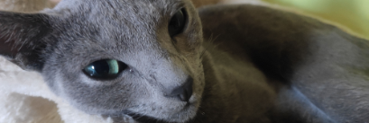
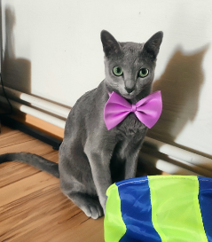
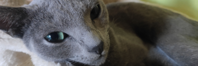
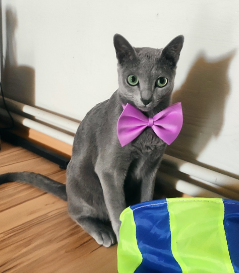

Polina - Ruská modrá kočka
Poli se narodila 20. května 2019 v prvním vrhu ruské modré kočkz Lindy Mollis Fellis v Českých Heřmanicích.
Netrvalo dlouho a její velké zelené oči a elegantní křivky přilákaly první zájemce.
Slovo dalo slovo a hned při první návštěvě bylo jasné, že to je ideální kočičí parťák na dlouhé zimní
večery.
Otři měsíce později už vyrážela Poli na svoje první velké dobrodružství daleko od své kočičí mámy do nové
rodiny.
Jaké jsou ruské modré kočky?
POVAHA
Ruské modré kočky jsou považovány
za plyšové, mírně aktivní kočky. Zatímco ve věku kotěte jsou hravé a temperamentní, v dospělosti se stávají
jemnými, suverénními atlety.
Často jsou proto nabízeny jako ideální kočky do bytu. Ale pozor: ruská modrá kočka je velmi inteligentní,
miluje výzvy a zábavu!
VZHLED
Postava ruské modré kočky je půvabná. Díky dlouhým nohám se tato tři až pět kilogramů vážící středně velká
kočka značně liší od poněkud podsadité postavy britské krátkosrsté kočky.
Více se podobá kočce kartouzské - pokud by ovšem měla žluté oči jako kartouzská kočka a ne smaragdové.
HISTORIE
Tato původně kožešinová zvířata se postupně stala miláčky carů i jejich rodin, nejznámějším příkladem je
ruský modrý kocour Vasko, kterého vlastnil ruský car Mikuláš I. Nejpozději kolem roku 1860 se toto plemeno
koček příčiněním námořníků dostalo do Anglie.


 


